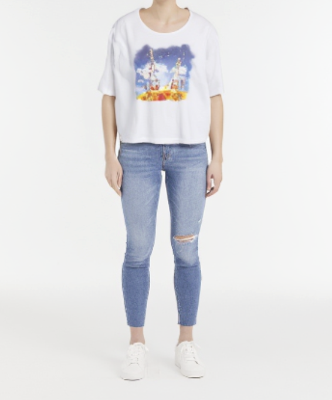

Given a person and a garment image, virtual try-on (VTO) aims to synthesize a realistic image of the person wearing the garment, while preserving their original pose and identity. Although recent VTO methods excel at visualizing garment appearance, they largely overlook a crucial aspect of the try-on experience: the accuracy of garment fit -- for example, depicting how an extra-large shirt looks on an extra-small person. A key obstacle is the absence of datasets that provide precise garment and body size information, particularly for "ill-fit” cases, where garments are significantly too large or too small. Consequently, current VTO methods default to generating well-fitted results regardless of the garment or person size.
In this paper, we take the first steps towards solving this open problem. We introduce FIT (Fit-Inclusive Try-on), a large-scale VTO dataset comprising over 1.13M try-on image triplets accompanied by precise body and garment measurements. We overcome the challenges of data collection via a scalable synthetic strategy: (1) We programmatically generate 3D garments using GarmentCode and drape them via physics simulation to capture realistic garment fit. (2) We employ a novel re-texturing framework to transform synthetic renderings into photorealistic images while strictly preserving geometry. (3) We introduce person identity preservation into our re-texturing model to generate paired person images (same person, different garments) for supervised training. Finally, we leverage our FIT dataset to train a baseline fit-aware virtual try-on model. Our data and results set the new state-of-the-art for fit-aware virtual try-on, as well as offer a robust benchmark for future research. We will make all data and code publicly available.
Select a data sample to view the try-on image, paired-person image, layflat garment image, and measurements.
| Dataset | Realism | Ill-Fit | Size Info | Triplet | Scale |
|---|---|---|---|---|---|
| SV-VTO | ✓ | ✓ | ✓ | ✓ | 1,524 |
| SIZER | ✓ | ✓ | ✓ | ✗ | 2,000 |
| DeepFashion3D | ✗ | ✗ | ✗ | ✗ | 2,078 |
| ViTON-HD | ✓ | ✗ | ✗ | ✗ | 11,647 |
| LAION-Garment | ✓ | ✗ | ✗ | ✓ | 60K |
| SewFactory | ✓ | ✗ | ✓ | ✗ | 1M |
| GCD | ✗ | ✗ | ✓ | ✗ | 115K |
| Ours | ✓ | ✓ | ✓ | ✓ | 1.13M |
We compare FIT to related datasets. FIT is the first large-scale dataset for virtual try-on that provides photorealistic images, ill-fit examples, precise measurement information, and ground-truth paired-person images. For scale, we report the number of training images.
Visualize how different garments fit across different body shapes.
Select Garment
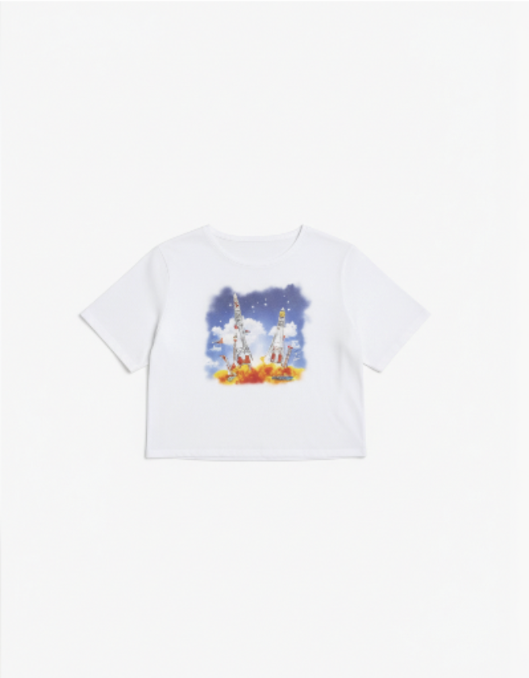

Select Person
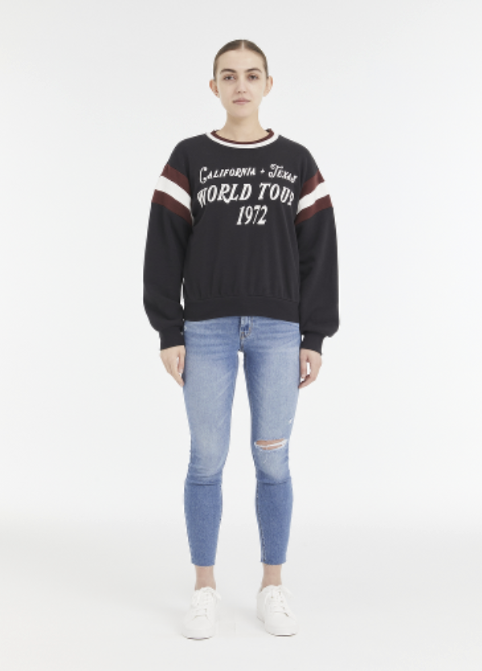
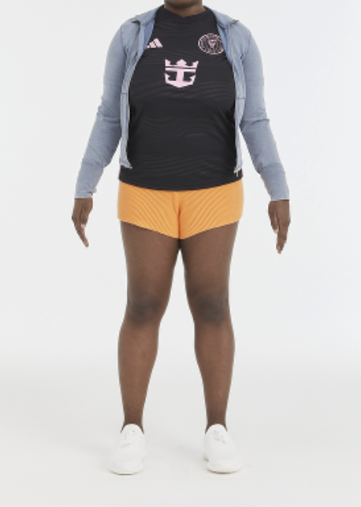
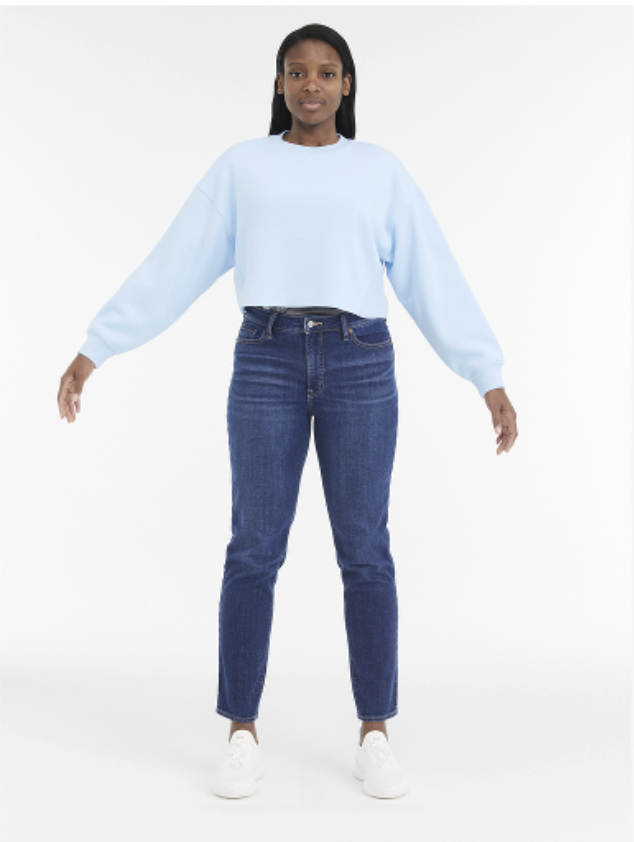
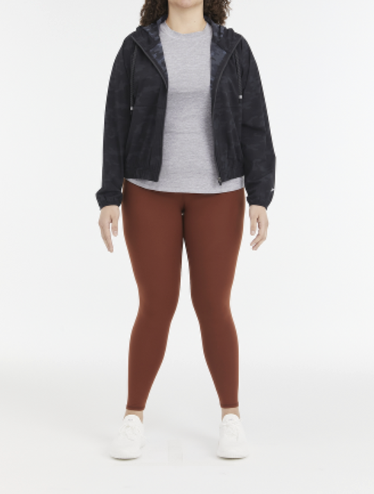
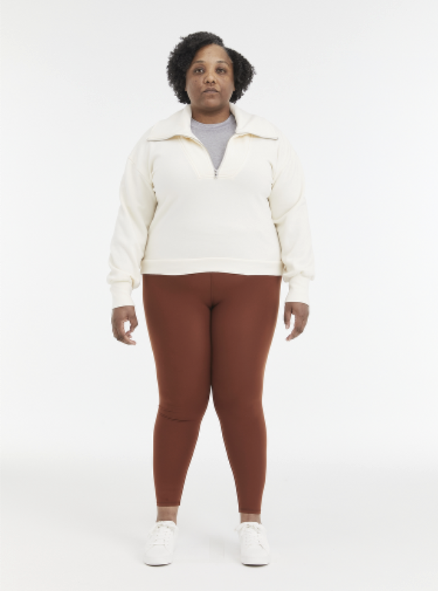
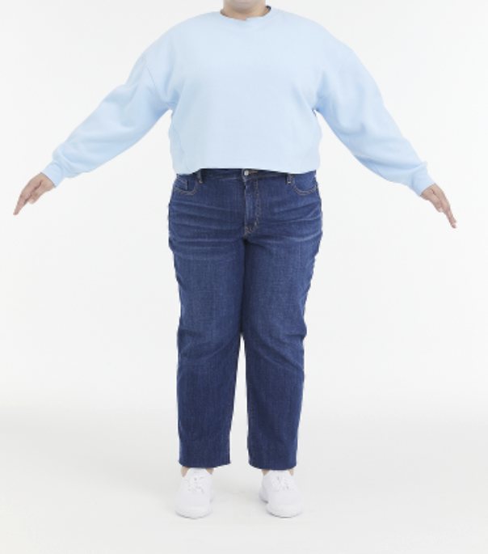
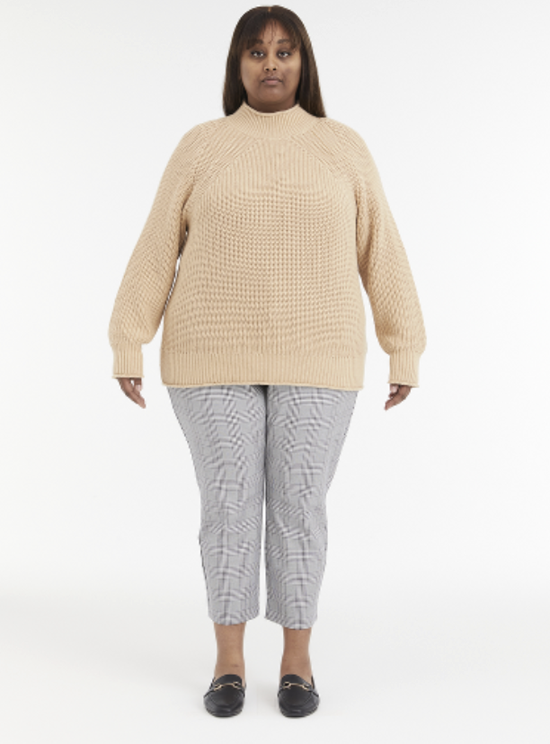
Try on different sizes of the same garment.
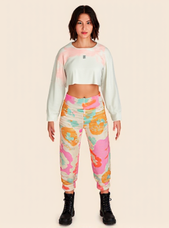
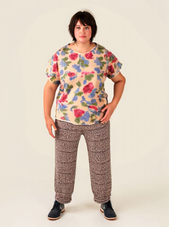
Garment Size

(a) Overall workflow: We start by simulating a 3D garment on a target body via GarmentCode to render a synthetic image $I_s$. We generate a text prompt $p$ (via VLM) and a composite normal map $I_n$ (stitching estimated normals with realistic head/feet details). These condition our re-texturing model $f_\text{texture}$ to produce the try-on image $I_{\text{try-on}}$. Finally, we use $f_\text{paired}$ to generate a paired person image $I_p$, and a VLM to synthesize a layflat garment $I_g$. (b) GarmentCode simulation: Given a sampled design template, we compute sewing patterns for a specific body size. Then, we cross-drape these patterns onto a different target body, using box-mesh realignment to prevent simulation failures, and extract ground-truth measurements. (c) Using source and target garments draped on the same body, we derive an identity map $I_\text{id}$ by masking the garment in $I_{\text{try-on}}$. Conditioned on $I_\text{id}$, a paired normal map $I_n'$, and a paired prompt $p'$, $f_\text{paired}$ generates the paired person image $I_p$.

Our architecture is a flow-based model based on Flux.1-dev MMDiT architecture and finetuned with LoRA. FiT-VTO generates a try-on image $I_{\text{try-on}}$ given a layflat garment image $I_g$, paired person image $I_p$, and person-garment measurements $m = [m_p, m_g]$. First, image inputs $I_g$ and $I_p$ are encoded into latents separately through a pre-trained VAE encoder. We replace the text embeddings in Flux.1-dev with custom measurement embeddings $m_{\text{embed}}$ computed from $m$. Person latents are channel-concatenated with the noisy target latents, while layflat latents and $m_{\text{embed}}$ are sequence-wise concatenated with $z_t$. After processing through the diffusion transformer, clean latents are decoded by the VAE decoder.
@article{fitvto2026,
author = {Karras, Johanna and Wang, Yuanhao and Li, Yingwei and Kemelmacher-Shlizerman, Ira},
title = {FIT: A Large-Scale Dataset for Fit-Aware Virtual Try-On},
journal = {arxiv},
year = {2026},
}